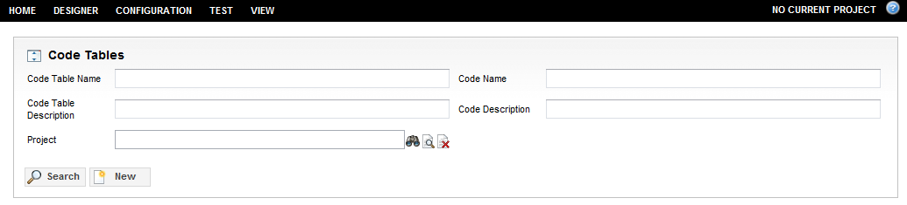

The Code Tables feature allows the maintenance of all enumeration lists used in an application and the maintenance of code tables and codes. The standard tasks include adding new code tables and codes, as well as viewing, modifying, deleting, importing and exporting existing code tables and codes.
Code tables contain codes with certain properties and configurations. Each code has a set of properties similar to the parent code table with the exception of sort settings that only apply to a code table. A code can be a simple name and description entry or it can refer to another code table that acts as a sub-table. That is, all the codes of a sub-table are inherited by the parent code table .A code table may contain zero or more codes.
Every code table has a unique name, a description, an a active status flag, and sort settings.
A non-versioned code table is a simpler code table than a a versioned code table. It does not belong to any project and its active status is flagged (checked) as active. As a rule, non-versioned code tables can only contain non-versioned codes, and vice-versa.
A versioned code table, on the other hand, is always associated with a catalog project and its active status depends on the start date and end date, as well as the status defined in a life cycle. Versioned code tables include additional fields such as project, status, and effective dates. Each versioned code table and code is associated with a project. This project is set at the time of creation to the currently opened project.
Code table codes do not have to have the same project as a parent code table.
If there is no open project, then the code table and its codes are created as non-versioned. Otherwise, they the have the version property and they are associated with the project that is open. It is not allowed to add a new code to a versioned code table with no open project.
You can use the CwfScriptGlobalFunctions.checkCTCode() method to check whether code exists in a code table. Additionally, the CwfScriptGlobalFunctions.checkForCode() method supports the former function.
Access Code Tables
The Code Tables feature is accessible from the Catalog application, as well as the Configuration application. However, only the Catalog application, which supports projects, can open the Code Tables page in version mode.
In the Catalog application, the Code Tables page can be accessed by clicking CONFIGURATION > Code Tables from the menu bar.

Note: The icon before the Code Tables title provides the ability to expand and collapse the top query pane.